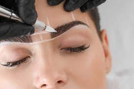

SERVICIOS DE CEJAS
Nuestro servicio de cejas está diseñado para ayudarte a realzar y definir la belleza natural de tus cejas. Nuestro equipo de expertos en cejas se encargará de proporcionarte un servicio personalizado y de alta calidad para lograr las cejas perfectas que se adapten a tus características individuales y resalten tu expresión facial. Aquí te presentamos nuestros servicios destacados.
Microblading
Dar forma a las cejas y que se vean bonitas, ese es uno de nuestros principales objetivos. No obstante, muchas veces problemas como un exceso de depilación, psoriasis o incluso alopecia pueden entorpecer alcanzar nuestra meta. Sí, es hora de hablar de microblading.El microblading es una técnica semipermanente que crea trazos de cejas ultrafinos y realistas. Nuestros expertos en microblading utilizarán una pluma especial y pigmentos de calidad para dibujar trazos que imitan el crecimiento natural del vello en las cejas. Esto proporciona un aspecto más lleno y definido a tus cejas, con resultados duraderos y de aspecto natural. Los efectos del microblading duran entre 6 meses y 1 año.
Laminado
El servicio de laminado de cejas es una técnica revolucionaria que te permite obtener cejas más definidas, estructuradas y con un aspecto más pulido y cuidado. Con este tratamiento, puedes lograr unas cejas con apariencia más completa, ordenada y con un aspecto más definido sin tener que recurrir a maquillaje diariamente. Se trata de una nueva alternativa que se inspira en el lifting de pestañas, pero ahora el beneficio lo obtienen las cejas al diseñar el arco perfecto y fijarlo durante 6 semanas. El laminado de cejas es un tratamiento especialmente indicado para cejas onduladas y/o rebeldes. Consiste en la aplicación de producto específico en toda la extensión de las cejas para alisarlas y peinarlas de forma permanente. Posteriormente se debe diseñar y depilar la ceja para lograr el perfilado de cejas perfecto.